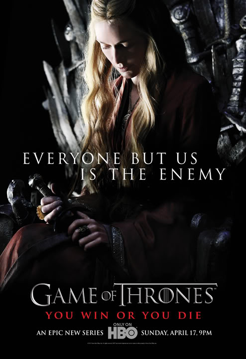

主要角色介紹
臨冬城公爵-奈德
在北方保護著維斯特洛的7國。他是一個對榮譽有陣很嚴肅感情的人，並且擁有一些沉重的秘密。他與勞勃·拜拉席恩同為鷹巢城公爵瓊恩·艾林的養子， 兩人一起長大。奈德是勞勃奪權的關鍵人物，幫助他從伊裏斯·坦格利安手裏奪權，贏得了鐵王座。他娶了凱瑟琳·徒利為妻。
凱瑟琳
臨冬城的女主人，艾德·史塔克的妻子，是艾德孩子們的母親，但艾德的孩子並不全是凱瑟琳的骨肉。她是一位堅強的女性，可以犧牲一切來保護她的家庭。她是奔 流城公爵霍斯特·徒利的長女，早年曾于艾德的哥哥布蘭登訂婚。徒利家的養子培提爾·貝裏席(小指頭)也曾因為對她的愛而向布蘭登挑戰。但最後她卻嫁給了艾 德。她與艾德生下羅柏·史塔克、布蘭登·史塔克、珊莎·史塔克、艾莉亞·史塔克與瑞肯·史塔克。此外還有身世可疑的私生子，瓊恩·雪諾。收下席恩·葛雷喬 伊作為人質兼養子
瓊恩·雪諾
艾德·史塔克的私生子，他的身世也許是艾德內心深處的秘密之一。由於私生子的身份讓他受到了不少艱辛，受到叔叔班楊·史塔克的影響後立志加入守夜人軍團。在前往長城的途中與提利昂·蘭尼斯特結下了友誼。
羅伯特
維斯特洛七國之王，與艾德是多年的老友，從小一起長大。勞勃與奈德的妹妹萊安娜·史塔克訂婚，但萊安娜卻與雷加·坦格利安私奔。這成為勞勃舉兵，從坦格利 安家族手中奪權的一大原因。但萊安娜卻在戰亂中身亡，這令勞勃心痛不已。之後他娶了瑟曦·蘭尼斯特。長期的酒色荒唐生活中這個曾是七國上下最英武的青年成 了一個胖子國王。
瑟曦·蘭尼斯特

勞勃的妻子，七國的王后。很竭力地保護著自己的三個孩子，她還和她的孿生兄弟詹姆-Jaime有著很親近的關係。她是凱岩城公爵泰溫·蘭尼斯特的長女，家族很富有
詹姆
女王的孿生兄弟，他是一個很有能力的劍客，最年輕的白騎士之一，他也是事實上殺死“瘋王”伊裏斯·坦格利安的人，為他贏得了一個不太光彩的外號：“弒君者”。與瑟曦的關係曖昧。